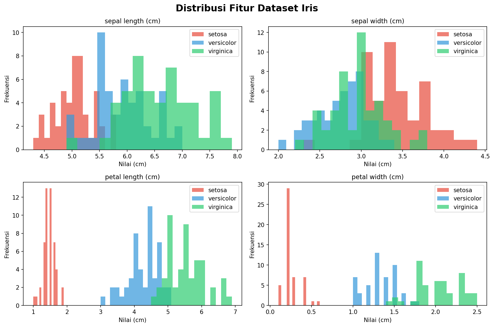
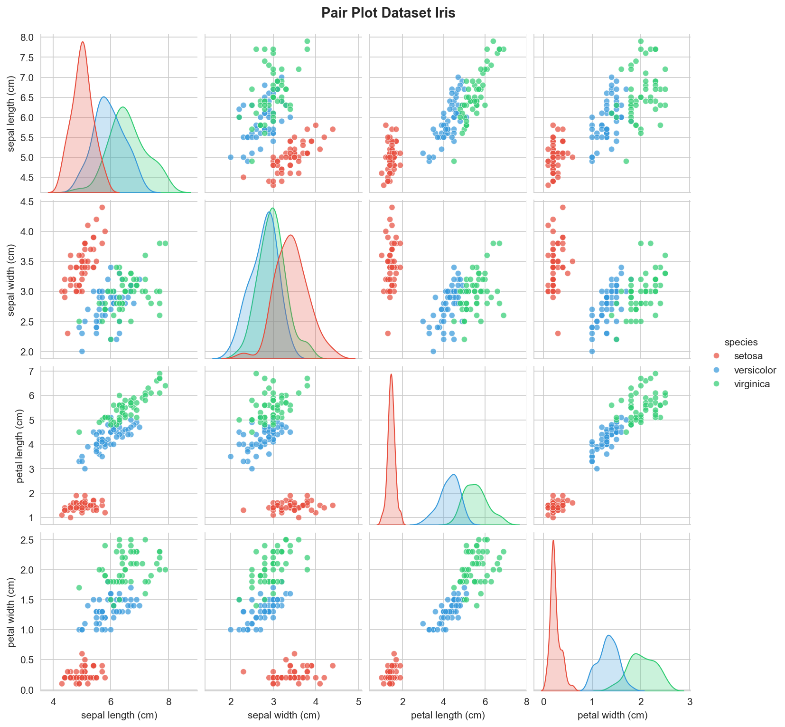
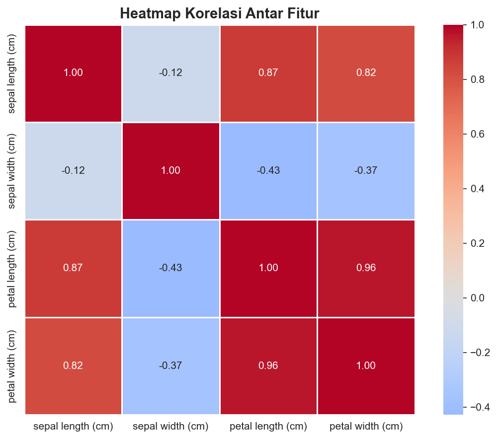
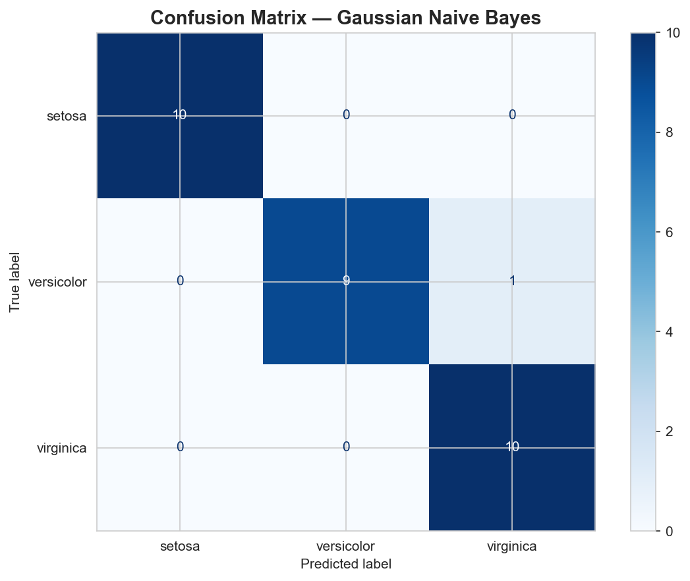
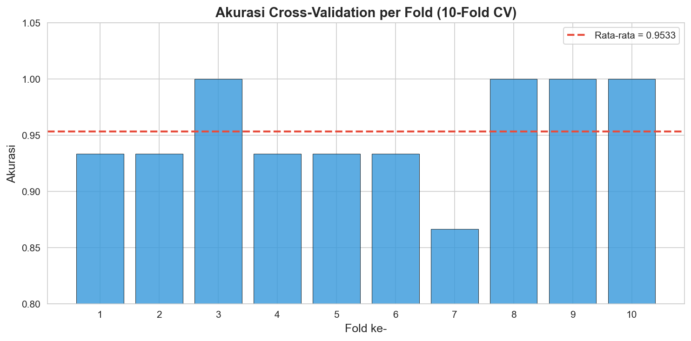
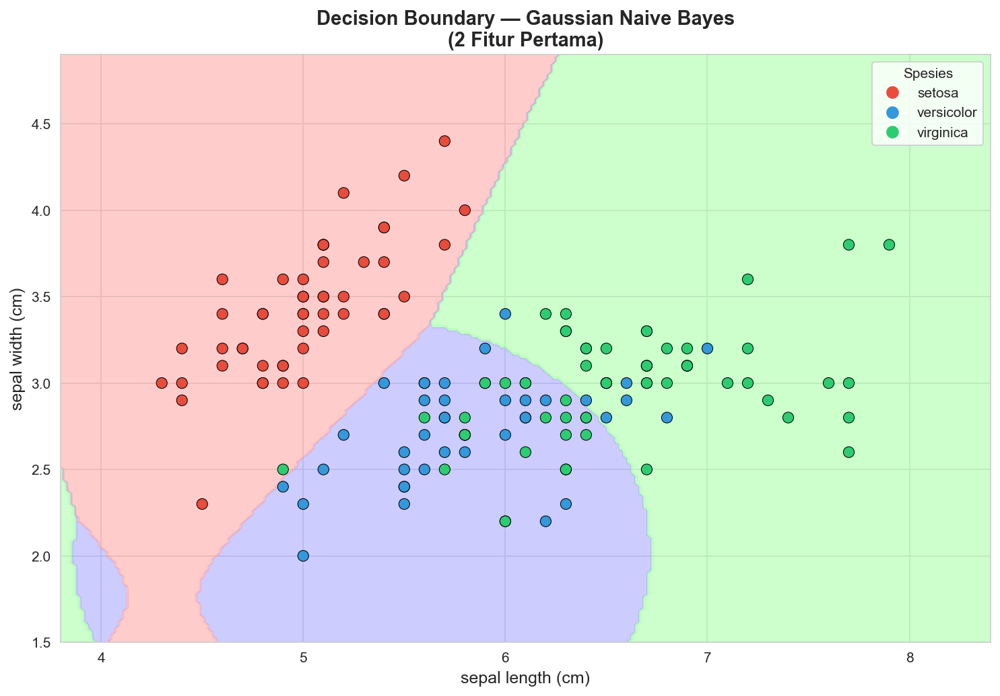

Analisis Data Menggunakan Naive Bayes#
Penambangan Data - Teknik Informatika Semester 4#
1. Pendahuluan#
Naive Bayes adalah algoritma klasifikasi berbasis probabilitas yang menerapkan Teorema Bayes dengan asumsi bahwa setiap fitur bersifat independen satu sama lain (naive assumption). Meskipun asumsi ini jarang benar di dunia nyata, Naive Bayes tetap bekerja dengan sangat baik dalam banyak kasus nyata.
Formula Teorema Bayes:
Keterangan:
\(P(C|X)\) = Probabilitas kelas \(C\) diberikan fitur \(X\) (posterior)
\(P(X|C)\) = Probabilitas fitur \(X\) diberikan kelas \(C\) (likelihood)
\(P(C)\) = Probabilitas awal kelas \(C\) (prior)
\(P(X)\) = Probabilitas fitur \(X\) (evidence)
Dataset yang digunakan: Iris Dataset
Library: Scikit-learn (sklearn.naive_bayes)
Referensi: https://scikit-learn.org/stable/api/sklearn.naive_bayes.html
2. Import Library#
import numpy as np
import pandas as pd
import matplotlib.pyplot as plt
import seaborn as sns
from sklearn.datasets import load_iris
from sklearn.model_selection import train_test_split, cross_val_score
from sklearn.naive_bayes import GaussianNB
from sklearn.metrics import (
accuracy_score,
classification_report,
confusion_matrix,
ConfusionMatrixDisplay
)
import warnings
warnings.filterwarnings('ignore')
print("Semua library berhasil diimport!")
3. Load dan Eksplorasi Dataset#
3.1 Load Dataset Iris#
iris = load_iris()
df = pd.DataFrame(data=iris.data, columns=iris.feature_names)
df['target'] = iris.target
df['species'] = df['target'].map({0: 'setosa', 1: 'versicolor', 2: 'virginica'})
print("=" * 50)
print("INFORMASI DATASET IRIS")
print("=" * 50)
print(f"Jumlah data : {df.shape[0]} baris")
print(f"Jumlah fitur : {len(iris.feature_names)} kolom")
print(f"Kelas target : {list(iris.target_names)}")
print(f"Jumlah kelas : {len(iris.target_names)}")
df.head()
3.2 Statistik Deskriptif#
df.describe().round(2)
3.3 Distribusi Kelas#
print(df['species'].value_counts())
4. Visualisasi Data#
4.1 Distribusi Setiap Fitur#
fig, axes = plt.subplots(2, 2, figsize=(12, 8))
fig.suptitle('Distribusi Fitur Dataset Iris', fontsize=16, fontweight='bold')
colors = ['#E74C3C', '#3498DB', '#2ECC71']
features = iris.feature_names
for idx, (ax, feature) in enumerate(zip(axes.flatten(), features)):
for i, (species, color) in enumerate(zip(iris.target_names, colors)):
data = df[df['target'] == i][feature]
ax.hist(data, alpha=0.7, label=species, color=color, bins=15)
ax.set_title(feature, fontsize=11)
ax.set_xlabel('Nilai (cm)')
ax.set_ylabel('Frekuensi')
ax.legend()
plt.tight_layout()
plt.savefig('distribusi_fitur.png', dpi=150, bbox_inches='tight')
plt.show()
Output:

Grafik di atas menunjukkan distribusi nilai dari keempat fitur untuk masing-masing spesies. Fitur petal length dan petal width memiliki pemisahan yang sangat jelas antar kelas, terutama untuk spesies setosa (merah) yang terpisah sempurna dari dua kelas lainnya.
4.2 Pair Plot#
sns.set_style("whitegrid")
pair_plot = sns.pairplot(
df[iris.feature_names + ['species']],
hue='species',
palette={'setosa': '#E74C3C', 'versicolor': '#3498DB', 'virginica': '#2ECC71'},
plot_kws={'alpha': 0.7},
diag_kind='kde'
)
pair_plot.fig.suptitle('Pair Plot Dataset Iris', y=1.02, fontsize=14, fontweight='bold')
plt.savefig('pairplot_iris.png', dpi=150, bbox_inches='tight')
plt.show()
Output:

Pair plot memperlihatkan hubungan antar setiap pasang fitur. Diagonal menampilkan distribusi KDE per kelas. Kombinasi petal length vs petal width memberikan pemisahan terbaik antar ketiga spesies. Setosa (merah) selalu terkluster tersendiri di semua kombinasi fitur.
4.3 Heatmap Korelasi#
plt.figure(figsize=(8, 6))
corr_matrix = df[iris.feature_names].corr()
sns.heatmap(
corr_matrix,
annot=True,
fmt='.2f',
cmap='coolwarm',
center=0,
square=True,
linewidths=0.5
)
plt.title('Heatmap Korelasi Antar Fitur', fontsize=14, fontweight='bold')
plt.tight_layout()
plt.savefig('heatmap_korelasi.png', dpi=150, bbox_inches='tight')
plt.show()
Output:

Heatmap menunjukkan nilai korelasi antar fitur. Korelasi tertinggi ada antara petal length dan petal width (0.96), serta sepal length dan petal length (0.87). Sepal width memiliki korelasi negatif lemah terhadap fitur lainnya (-0.12 s.d. -0.43).
5. Preprocessing Data#
5.1 Pisahkan Fitur dan Label#
X = iris.data
y = iris.target
print(f"Shape fitur (X) : {X.shape}")
print(f"Shape label (y) : {y.shape}")
5.2 Split Data: Training dan Testing#
X_train, X_test, y_train, y_test = train_test_split(
X, y,
test_size=0.2,
random_state=42,
stratify=y
)
print(f"Total data : {len(X)}")
print(f"Data Training : {len(X_train)} ({len(X_train)/len(X)*100:.0f}%)")
print(f"Data Testing : {len(X_test)} ({len(X_test)/len(X)*100:.0f}%)")
6. Membangun Model Naive Bayes#
6.1 Inisialisasi dan Training Model#
Model yang digunakan adalah Gaussian Naive Bayes karena fitur-fitur pada dataset Iris bersifat kontinu dan diasumsikan mengikuti distribusi Gaussian (normal).
gnb = GaussianNB()
gnb.fit(X_train, y_train)
print("Model Gaussian Naive Bayes berhasil dilatih!")
print(f"Var smoothing : {gnb.var_smoothing}")
print(f"Kelas : {gnb.classes_}")
print(f"Prior : {gnb.class_prior_.round(4)}")
6.2 Prediksi Data Testing#
y_pred = gnb.predict(X_test)
y_prob = gnb.predict_proba(X_test)
print("Hasil Prediksi (10 data pertama):")
print("-" * 55)
print(f"{'No':<5} {'Aktual':<15} {'Prediksi':<15} {'Status'}")
print("-" * 55)
for i in range(10):
aktual = iris.target_names[y_test[i]]
prediksi = iris.target_names[y_pred[i]]
status = "Benar" if y_test[i] == y_pred[i] else "Salah"
print(f"{i+1:<5} {aktual:<15} {prediksi:<15} {status}")
7. Evaluasi Model#
7.1 Akurasi#
accuracy = accuracy_score(y_test, y_pred)
print(f"Akurasi Model : {accuracy * 100:.2f}%")
7.2 Classification Report#
print(classification_report(y_test, y_pred, target_names=iris.target_names))
Penjelasan Metrik:
Precision: Dari semua data yang diprediksi sebagai kelas X, berapa yang benar?
Recall: Dari semua data yang sebenarnya kelas X, berapa yang berhasil diprediksi?
F1-Score: Rata-rata harmonik dari Precision dan Recall.
Support: Jumlah data aktual per kelas.
7.3 Confusion Matrix#
fig, ax = plt.subplots(figsize=(8, 6))
cm = confusion_matrix(y_test, y_pred)
disp = ConfusionMatrixDisplay(confusion_matrix=cm, display_labels=iris.target_names)
disp.plot(ax=ax, cmap='Blues', colorbar=True)
ax.set_title('Confusion Matrix - Gaussian Naive Bayes', fontsize=14, fontweight='bold')
plt.tight_layout()
plt.savefig('confusion_matrix.png', dpi=150, bbox_inches='tight')
plt.show()
Output:

Confusion matrix menunjukkan hasil klasifikasi model pada data testing (30 sampel). Diagonal utama adalah prediksi benar:
Setosa: 10/10 - sempurna
Versicolor: 9/10 - 1 salah diklasifikasikan sebagai virginica
Virginica: 10/10 - sempurna
Total kesalahan hanya 1 dari 30 data -> Akurasi = 96.67%
7.4 Cross-Validation (K-Fold)#
cv_scores = cross_val_score(gnb, X, y, cv=10, scoring='accuracy')
print(f"Skor per fold : {[f'{s:.4f}' for s in cv_scores]}")
print(f"Rata-rata : {cv_scores.mean():.4f} ({cv_scores.mean()*100:.2f}%)")
print(f"Std Deviasi : {cv_scores.std():.4f}")
print(f"Min : {cv_scores.min():.4f}")
print(f"Max : {cv_scores.max():.4f}")
plt.figure(figsize=(10, 5))
folds = range(1, 11)
plt.bar(folds, cv_scores, color='#3498DB', alpha=0.8, edgecolor='black', linewidth=0.5)
plt.axhline(y=cv_scores.mean(), color='#E74C3C', linestyle='--', linewidth=2,
label=f'Rata-rata = {cv_scores.mean():.4f}')
plt.xlabel('Fold ke-', fontsize=12)
plt.ylabel('Akurasi', fontsize=12)
plt.title('Akurasi Cross-Validation per Fold (10-Fold CV)', fontsize=14, fontweight='bold')
plt.ylim(0.8, 1.05)
plt.xticks(folds)
plt.legend()
plt.tight_layout()
plt.savefig('cross_validation.png', dpi=150, bbox_inches='tight')
plt.show()
Output:

Grafik cross-validation menunjukkan akurasi model pada setiap fold dari 10-Fold CV. Rata-rata akurasi 95.33% (garis merah putus-putus). Fold ke-7 memiliki akurasi terendah (~86.7%), sedangkan fold ke-3, 8, 9, dan 10 mencapai 100%. Variasi yang kecil membuktikan model stabil dan tidak overfitting.
8. Visualisasi Decision Boundary#
from matplotlib.colors import ListedColormap
X_vis = X[:, :2]
X_train_v, X_test_v, y_train_v, y_test_v = train_test_split(
X_vis, y, test_size=0.2, random_state=42, stratify=y
)
gnb_vis = GaussianNB()
gnb_vis.fit(X_train_v, y_train_v)
h = 0.02
x_min, x_max = X_vis[:, 0].min() - 0.5, X_vis[:, 0].max() + 0.5
y_min, y_max = X_vis[:, 1].min() - 0.5, X_vis[:, 1].max() + 0.5
xx, yy = np.meshgrid(np.arange(x_min, x_max, h), np.arange(y_min, y_max, h))
Z = gnb_vis.predict(np.c_[xx.ravel(), yy.ravel()])
Z = Z.reshape(xx.shape)
plt.figure(figsize=(10, 7))
cmap_light = ListedColormap(['#FFAAAA', '#AAAAFF', '#AAFFAA'])
cmap_bold = ListedColormap(['#E74C3C', '#3498DB', '#2ECC71'])
plt.contourf(xx, yy, Z, cmap=cmap_light, alpha=0.6)
plt.scatter(X_vis[:, 0], X_vis[:, 1], c=y, cmap=cmap_bold,
edgecolor='black', linewidth=0.5, s=60)
plt.xlabel(iris.feature_names[0], fontsize=12)
plt.ylabel(iris.feature_names[1], fontsize=12)
plt.title('Decision Boundary - Gaussian Naive Bayes\n(2 Fitur Pertama)', fontsize=14, fontweight='bold')
handles = [plt.Line2D([0], [0], marker='o', color='w',
markerfacecolor=c, markersize=10, label=l)
for c, l in zip(['#E74C3C', '#3498DB', '#2ECC71'], iris.target_names)]
plt.legend(handles=handles, title='Spesies')
plt.tight_layout()
plt.savefig('decision_boundary.png', dpi=150, bbox_inches='tight')
plt.show()
Output:

Visualisasi decision boundary menggunakan 2 fitur pertama (sepal length & sepal width). Area berwarna menunjukkan wilayah keputusan model untuk masing-masing kelas. Setosa (merah) terpisah jelas di kiri atas, sementara versicolor (biru) dan virginica (hijau) memiliki sedikit tumpang tindih di tengah - konsisten dengan 1 kesalahan klasifikasi pada confusion matrix.
9. Uji Prediksi Data Baru#
data_baru = np.array([
[5.1, 3.5, 1.4, 0.2], # Kemungkinan setosa
[6.7, 3.0, 5.2, 2.3], # Kemungkinan virginica
[5.9, 3.0, 4.2, 1.5], # Kemungkinan versicolor
])
prediksi_baru = gnb.predict(data_baru)
prob_baru = gnb.predict_proba(data_baru)
print(f"{'Data':<6} {'Sepal L':<10} {'Sepal W':<10} {'Petal L':<10} {'Petal W':<10} {'Prediksi'}")
print("-" * 70)
for i, (data, pred) in enumerate(zip(data_baru, prediksi_baru)):
print(f"{i+1:<6} {data[0]:<10} {data[1]:<10} {data[2]:<10} {data[3]:<10} {iris.target_names[pred]}")
print("\nProbabilitas per Kelas:")
print(f"{'Data':<6} {'Setosa':<14} {'Versicolor':<16} {'Virginica'}")
print("-" * 52)
for i, prob in enumerate(prob_baru):
print(f"{i+1:<6} {prob[0]:.8f} {prob[1]:.8f} {prob[2]:.8f}")
10. Ringkasan dan Kesimpulan#
print("=" * 55)
print(" RINGKASAN HASIL ANALISIS")
print("=" * 55)
print(f" Dataset : Iris Dataset")
print(f" Algoritma : Gaussian Naive Bayes")
print(f" Jumlah Data : 150 sampel")
print(f" Jumlah Fitur : 4 fitur")
print(f" Jumlah Kelas : 3 kelas")
print(f" Data Training : 120 sampel (80%)")
print(f" Data Testing : 30 sampel (20%)")
print("-" * 55)
print(f" Akurasi Testing : {accuracy * 100:.2f}%")
print(f" Rata-rata CV : {cv_scores.mean() * 100:.2f}%")
print(f" Std CV : +- {cv_scores.std() * 100:.2f}%")
print("=" * 55)
Kesimpulan#
Berdasarkan hasil analisis yang telah dilakukan, dapat disimpulkan bahwa:
Model Gaussian Naive Bayes berhasil mengklasifikasikan spesies bunga Iris dengan akurasi 96.67% pada data testing - hanya 1 dari 30 data yang salah diklasifikasi.
Dataset Iris sangat cocok untuk Naive Bayes karena fitur-fiturnya bersifat kontinu dan mendekati distribusi Gaussian (normal), sehingga asumsi Gaussian Naive Bayes terpenuhi dengan baik.
Kelas Setosa paling mudah diklasifikasikan karena memiliki pemisahan fitur yang sangat jelas. Sementara Versicolor dan Virginica memiliki sedikit tumpang tindih, terutama pada dimensi sepal length dan sepal width.
Hasil Cross-Validation 10-fold menunjukkan rata-rata akurasi 95.33% dengan standar deviasi kecil, membuktikan model stabil dan tidak overfitting pada data tertentu.
Gaussian Naive Bayes terbukti merupakan algoritma yang sederhana, cepat, dan efektif - cocok sebagai baseline classifier untuk dataset dengan fitur kontinu seperti Iris.
Referensi#
Scikit-learn Documentation: https://scikit-learn.org/stable/api/sklearn.naive_bayes.html
Fisher, R.A. (1936). The use of multiple measurements in taxonomic problems.
Pedregosa, F. et al. (2011). Scikit-learn: Machine learning in Python. JMLR.